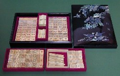
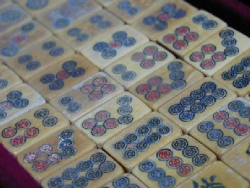

Tile colection 珍奇牌。
（５）象牙牌

象牙の古牌。２枚目の写真でよく分かるが、象牙はかなり厚味がある高級品。
なんと裏打ちも黒檀！。もちろん籌馬（点棒）も象牙。この点棒も、よくある扁平型ではなく円筒形。そこで点棒の端をつまんで２本を軽く打ち合わせると、カチ〜ンカチ〜ンという軽い金属音のような音がする。
ごらんのようにσ(-_-)の名前入りの螺鈿細工の箱に入っている。もちろん本来の箱ではない。こんな良い牌なのに、残念ながら入手したときに箱はなかった。そこで伝てを頼って韓国へ発注、わざわざあつらえたモノ（韓国は螺鈿細工が盛ん）。
